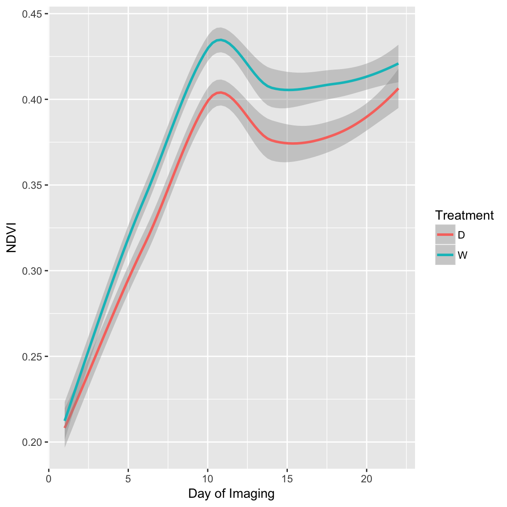
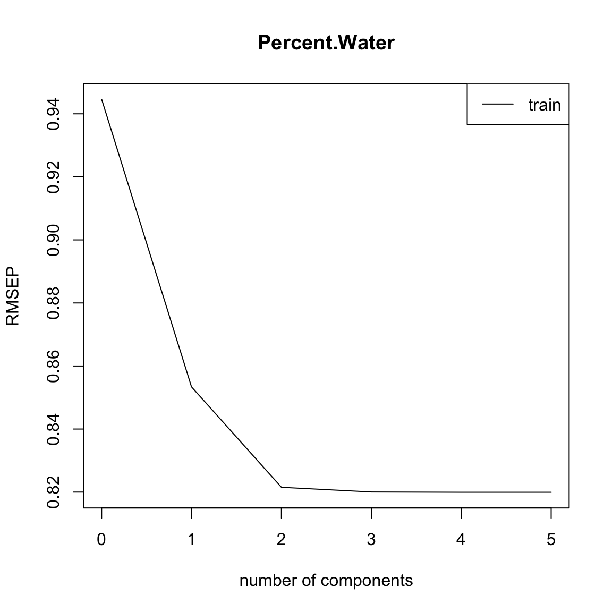

Vitis dataset
Here, we will bridge the gap between “classical” ampelography (the classification of grapevines based on phenotypic characteristics) and “digital” ampelography. Pierre Galet devised a series of morphological descriptors that could be used to differentiate between wine grape cultivars in the early 1960’s. His efforts transformed ampelography from an art form to a science. However, imaging can be used to increase the throughput and accuracy of ampelography. This dataset was generated by Chitwood et al (2014). I encourage you to check out the paper, as it is an interesting read and combines imaging, genomics, and transcriptomics. The objective of their study was to provide a morphometric analysis of leaf shape for more than 1,200 grape accessions, and provide a genetic basis for these complex traits. The authors used photographs of leaves for a panel of 1,200 grape varieties at the USDA National Clonal Germplasm Repository. The authors used several metrics to describe the leaf shape (circularity, aspect ratio) and used the principle components from generalized Procrustes analysis (GPA) and Elliptical Fourier descriptors. In this dataset you’ll find the digital descriptors, as well as those used by Galet (obtained from the USDA GRIN database).
| Source of Trait | Column Name | Trait Name | Description |
|---|---|---|---|
| Chitwood et al (2014) | circ | Circularity | Ratio of the area to perimeter of an outline |
| ar | Aspect Ratio | Ratio of the major axis to the minor axis of a fitted ellipse | |
| iPC1 | Inner PC1 | See figure 3B of Chitwood et al | |
| iPC2 | Inner PC2 | See figure 3B of Chitwood et al | |
| iPC3 | Inner PC3 | See figure 3B of Chitwood et al | |
| oPC1 | Outer PC1 | See figure 3A of Chitwood et al | |
| oPC2 | Outer PC2 | See figure 3A of Chitwood et al | |
| oPC3 | Outer PC3 | See figure 3A of Chitwood et al | |
| symPC1 | Symmetric PC1 | See figure 2 of Chitwood et al | |
| symPC2 | Symmetric PC2 | See figure 2 of Chitwood et al | |
| symPC3 | Symmetric PC3 | See figure 2 of Chitwood et al | |
| symPC4 | Symmetric PC4 | See figure 2 of Chitwood et al | |
| symPC5 | Symmetric PC5 | See figure 2 of Chitwood et al | |
| Galet (1952) | A | A | Ratio of the length of superior lateral vein to midrib |
| B | B | Ratio of the length of inferior lateral vein to midrib | |
| C | C | Ratio of the length of petiolar vein to midrib | |
| r | r | Ratio of the length to width of the leaf | |
| Spri | S’ | Angle between midrib and inferior lateral vein | |
| S | S | Angle between midrib and petiolar vein | |
| lowSup | SI2/L2 | low estimate of superior lobing | |
| lowInf | SI1/L3 | low estimate of inferior lobing | |
| highSup | SI2/L2 | high estimate of superior lobing | |
| highInf | SI1/L3 | low inferior of superior lobing |
Phenotype Data
Here we’ll load the phenotype data, and take a look at the first six lines. Each row corresponds to a grapevine accession from the USDA germplasm repository. Although 1200 accesssions were phenotyped by Chitwood et al (2012), only 122 had descriptions using Galet’s method. The first 13 columns are the digital traits, and the last 10 are the classical measurements.
chitwood = read.csv("Phenotypes/Chitwood_Galet.csv", row.names = 1)
# head(chitwood)Spearman correlation between digital and classical ampelography metrics
Here, we’ll look at the correlation between digital and classical amelography measurements using Spearman’s Rank correlation.
sp.cor = cor(chitwood[1:13], chitwood[14:23], method = "spearman")Plot the results
Now, we’ll plot the results as a nice heatmap.
# install.packages(gplots)
library(gplots)
heatmap.2(sp.cor, Rowv = F, Colv = F, dendrogram = "none", trace = "none", cellnote = round(sp.cor,
2), notecol = "black", notecex = 0.5, breaks = seq(-1, 1, length.out = 100),
margins = c(6, 6))
Hyperspectral imaging for assessing drought responses in maize
The purpose of this exercise is to explore some hyperspectral imaging data, and determine which spectral bands and/or indicies can be used to predict plant water status. Here, we will look at some hyperspectral data collected from some corn plants under control and drought conditions. The plants were imaged over a period of 22 days during the V5 (5 leaf) to V6 (6 leaf) stage at UNL’s Innovation Campus greenhouse. See the Corny News Network for a description of the growth stages of corn. All plants were watered to 80% feild capacity prior to imaging, and a subset of plants were allowed to dry-down to 50% feild capacity throughout the imaging period. On the last total plant water content was measured for X plants (credit: Sajag Adhikari).
The goal of the exercise is to find the “best” index or hyperspectral band(s) for predicting plant water status. Feel free to try out some other published indicies or some alternative analyses José R. Rodríguez-Pérez et al (2007) provides an extensive list. Below, you will find a few functions to calculate indices commonly used in hyperspectral studies. I will provide a brief example of how to calculate NDVI for each plant (\(NDVI = \frac{R_{800} - R_{640}}{R_{800} + R_{640}}\)) You can modify the code to use your own indices.
Hyperspectral data
The imaging system provides a stack of 235 greyscale images for each plant. Each image in the stack is a specific wavelength. For each image, we remove the background objects leaving just the “plant pixels”. Each plant pixel will be a single chandanel and the intensity of the channel should be proportional to the reflectance. So, a higher intensity means more reflectance for a given wavelength. For each image we obtain the mean pixel intensity (sum the pixel intensities and divide by the total number of plant pixels). This is equivalent to the mean reflectance for each plant. Here, we will read in the file of the mean pixel intensities for each plant.
dat = read.csv("Phenotypes/Hyperspec_pixel_density.csv")
# Check the first 10 columns of the phenotypic data head(dat[1:10])
# Plot the refectance for all wavelengths
dat.means = apply(dat[4:ncol(dat)], 2, mean)
plot(seq(from = 585, to = 1755, by = 5), dat.means, type = "l", ylab = "Reflectance",
xlab = "Wavelength")
Here, I will calculate the normalized difference vegetation index (NDVI). I will create a new dataframe named ‘NDVI’ that has the NDVI calculations, the plant ID, the treatment, and the day of imaging. I’ll create a plot of NDVI over the six time points (1 - 22 days of imaging).
# Make the data frame
NDVI.df = data.frame(ID = dat$ID, Treatment = dat$Treatment, DayOfImaging = dat$DayOfImaging,
NDVI = NDVI(dat))
# boxplot(NDVI~Treatment, data=NDVI.df, ylab='NDVI')
# Plot results install.packages('ggplot2')
library(ggplot2)
ggplot(NDVI.df, aes(x = DayOfImaging, y = NDVI, colour = Treatment)) + geom_smooth(method = "loess") +
xlab("Day of Imaging") + ylab("NDVI")
The indices defined above only capture a small portion of the total phenotype described by the hyperspectral data. Here, we will first utilize the whole hyperspectral range to predict plant water content. This data was collected at 24 days after imaging. For this part of the excersize we will utilize partial least squares regression in the package ‘pls’. Below I will provide a brief explaination of the methodology. For those interested, the ‘pls’ manual provides an in-depth explaination of the PLSR technique, and a few example datasets PLS.
# install.packages('pls')
library(pls)
# This dataset contains the reflacance values for all the wavelengths. These
# will be used as predictors for the percent of total biomass that is water
# ('Percent.Water').
dat2 = read.csv("Phenotypes/Hyperspec_PWC.csv")
dat2$ID = NULL
dat2$Treatment = NULL
dat2$TotalWater = NULL
# Make a training set and validation set to assess the prediction accuracy
# This is similar to what we did for genomic prediction, however here we
# will only sample the data once.
traindat <- dat2[1:50, ]
testdat <- dat2[51:87, ]# Now we'll fit the PLSR model. We're regressing the Percent water on the
# hyperspectral data (Percent.Water ~ a).
full.spec <- plsr(Percent.Water ~ ., data = traindat)
summary(full.spec)Data: X dimension: 50 242
Y dimension: 50 1
Fit method: kernelpls
Number of components considered: 49
TRAINING: % variance explained
1 comps 2 comps 3 comps 4 comps 5 comps 6 comps
X 97.32 98.97 99.26 99.33 99.38 99.43
7 comps 8 comps 9 comps 10 comps 11 comps 12 comps
X 99.50 99.55 99.58 99.61 99.64 99.67
13 comps 14 comps 15 comps 16 comps 17 comps 18 comps
X 99.70 99.71 99.74 99.76 99.80 99.81
19 comps 20 comps 21 comps 22 comps 23 comps 24 comps
X 99.82 99.84 99.85 99.87 99.88 99.89
25 comps 26 comps 27 comps 28 comps 29 comps 30 comps
X 99.9 99.91 99.92 99.92 99.93 99.94
31 comps 32 comps 33 comps 34 comps 35 comps 36 comps
X 99.94 99.95 99.95 99.96 99.97 99.97
37 comps 38 comps 39 comps 40 comps 41 comps 42 comps
X 99.97 99.98 99.98 99.98 99.98 99.99
43 comps 44 comps 45 comps 46 comps 47 comps 48 comps
X 99.99 99.99 99.99 100 100 100
49 comps
X 100
[ reached getOption("max.print") -- omitted 1 row ]plot(RMSEP(full.spec), legendpos = "topright")
# This line shows the how well the model fits our data
plot(full.spec, ncomp = 20, asp = 1, line = TRUE)
# Now we predict the percent water for the testing dataset using the model
# fit using the training dataset
Y.tst = predict(full.spec, ncomp = 20, newdata = testdat)Plot the results
plot(Y.tst, testdat$Percent.Water, xlab = "Percent Water Predicted", ylab = "Percent Water Observed")
abline(0, 1, col = "red")
Calculate the correlation between predicted values and observed values in the data set
cor(Y.tst, testdat$Percent.Water)[1] 0.2602748sub.hyperspec <- function(startBW, endBW) {
if (sum(colnames(dat2) == paste0("bw_", startBW)) > 0) {
start.col = which(colnames(dat2) == paste0("bw_", startBW))
} else {
print("Column name for first bandwidth does not exist")
}
if (sum(colnames(dat2) == paste0("bw_", endBW)) > 0) {
end.col = which(colnames(dat2) == paste0("bw_", endBW))
} else {
print("Column name for last bandwidth does not exist")
}
tmp.df = as.data.frame(cbind(dat2$Percent.Water, dat2[, start.col:end.col]))
colnames(tmp.df)[1] = "Percent.Water"
return(tmp.df)
}
dat3 = sub.hyperspec(585, 605)
traindat2 <- dat3[1:50, ]
testdat2 <- dat3[51:87, ]# Now we'll fit the PLSR model. We're regressing the Percent water on the
# hyperspectral data (Percent.Water ~ a).
full.spec <- plsr(Percent.Water ~ ., data = traindat2)
summary(full.spec)Data: X dimension: 50 5
Y dimension: 50 1
Fit method: kernelpls
Number of components considered: 5
TRAINING: % variance explained
1 comps 2 comps 3 comps 4 comps 5 comps
X 91.53 94.02 95.49 97.94 100.00
Percent.Water 18.38 24.36 24.63 24.65 24.65plot(RMSEP(full.spec), legendpos = "topright")
plot(full.spec, asp = 1, line = TRUE)
plot(Y.tst, testdat$Percent.Water, xlab = "Percent Water Predicted", ylab = "Percent Water Observed")
abline(0, 1, col = "red")
Calculate the correlation between predicted values and observed values in the data set
cor(Y.tst, testdat$Percent.Water)[1] 0.2602748